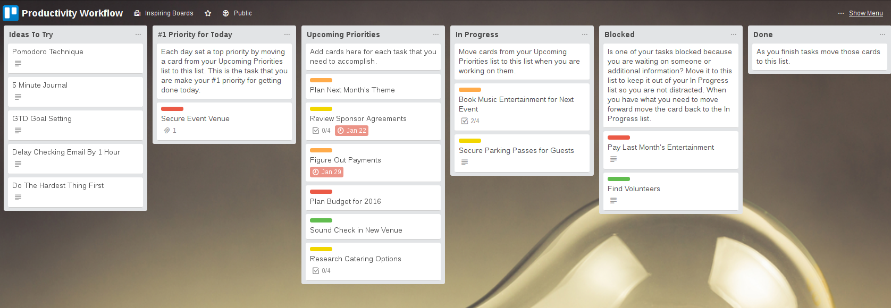
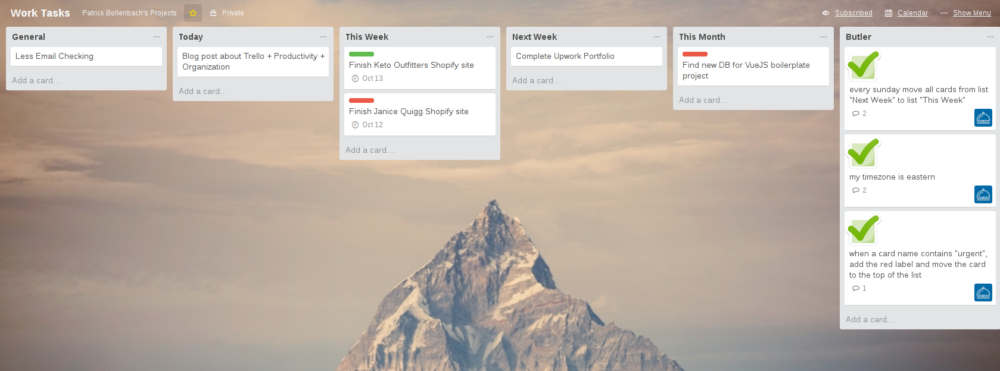

Introduction
As a freelancer I deal with a lot more stress and responsibilities than working a normal job. Juggling multiple clients in different timezones, getting called at 2:00 AM (when your client is from Australia) to fix a bug, and worst of all - managing deadlines for my customers. There are a ton of different methods and guides on how to “organize” your life as a freelancer, but none stuck with me until I started using Trello to it’s full potential.
My Stack
After trying out a couple different project management apps (most notably Asana), I finally forced myself to get into the Kanba- style Trello which I despised for the longest time (for no reason).
I started off with the typical Trello layout -
To Do > Doing > Done
This works well for small projects but I wanted to make a layout that could encompass my entire ‘work’ flow into one Trello board.
While checking out the Trello site I found their recommended layout page called Trello Inspirations. Once I started taking a look at other people’s boards, the workflow started to click with me and I started stealing ideas from different boards.
The first one I saw was Tim Ferriss’ “Productivity” workflow here. I really liked the “Ideas To Try”, and “#1 Priority For Today” lists.

I checked out a few different workflows and ended up with my sort of finished Trello board :

I liked the idea of having a “Ideas To Try” list, so I implemented that in my board as the “General” list to the far left.
Besides that, I decided to split my tasks up into a calendar-esque style, with “Today”, “This Week”, “Next Week”, and “This Month” lists. This helps me easily take a glance at the board and know my priorities.
This board flow has worked well for me so far and it’s helped me organize my life tenfold in a matter of days.
Butlerbot
Trello was cool for me and everything was going dandy, but I figured that there was a few too many steps I had to take to do some simple things. Thank God for automation + bots!
Butlerbot is a ridiculously handy tool to help automate your Trello workflow.
From the developer himself :
The bot can perform the following actions:
Create a card in a list.
Copy a card into a list.
Move a card from one list to another.
Add or remove a label from a card.
Count the labels in a board.
Some examples of commands it understands:
count labels
every friday at 5am, count labels
Every day at 6am, create a card titled “Good Morning!” in list “Vibes”
when i move a card to the “Orange Things” list, add the orange label to it
when a card is moved to the “Done Things” list, remove the red “ToDo” label from it
When the label “ToDo” is added to a card, copy it to the list “ToDo’s”.
when i add an attachment to a card, add a pink label called “HasAttachment”.
The way to use it is simply to invite the user butlerbot to a board. The bot will create a list called “Butler” and you can enter commands there as cards. The bot responds with comments in the cards. The bot doesn’t store, mine, forward or otherwise do anything evil with the cards, it just executes your commands to the best of its ability.
As you can see in my Trello workflow photo above, I have a list called “Butler” - in here I simply create a card with a command, such as
‘every Sunday move all cards from list “Next Week” to list “This Week”‘
Butlerbot will comment on the card with either a success message, and then you leave it alone and it is good to go!
I’m still trying to take full advantage of the bot’s potential, but it’s helped me with boring, menial tasks like automatically adding a RED “URGENT” label to cards if the title says “important” or “urgent”. Realistically this saves me a 30-60 seconds a day, but it’s extremely useful in the long run!
When I started with Trello I was trying to automate things with IFTT & Zapier, but it introduced a convoluted and multi step process to a simple task. Butlerbot does everything you need + more and it acts instantly with no delay.
Email-To-Board with Trello
While I had automated lots of my card movement within Trello, I still faced the problem of remembering tasks + inputting them into my board when I wasn’t near my computer.
You can easily download the Trello app which is incredibly simple - but a lot of my tasks are emails from clients, I don’t want to have to re-write an email into a Trello card everytime.
Here are a few links from Trello showing the procedure on how to get this set up - http://help.trello.com/article/809-creating-cards-by-email + http://blog.trello.com/how-to-create-trello-cards-from-email/ .
Now I can easily send an email to my contact “Trello Work” and the subject line and description is automatically inserted into a card in my specified Trello list. It is incredible!
Most of my work starts in emails from clients, so with the email-to-board setting on Trello I simply receive an email from a client (for example, “Homepage Image is distorted on mobile”) and forward it to my Trello work board. It gets inserted automatically and the next time I log into my computer I know exactly what I need to do that day.
Thoughts
Now that I have Trello + Butlerbot + Email-to-board working properly, my life has become incredibly organized and productive in a short period of time. I wake up every morning and am greeted with a list of tasks for “Today” and a sweet robot that will do a bunch of boring tasks for me.
I’ve combined this workflow with a couple recipes on IFTTT and I have found myself with a lot more time to actually do WORK rather than scrolling through pages and pages of emails looking for tasks from a certain client.
I highly suggest checking out these tools as they have been invaluable for me. Trello has changed my life for the better!